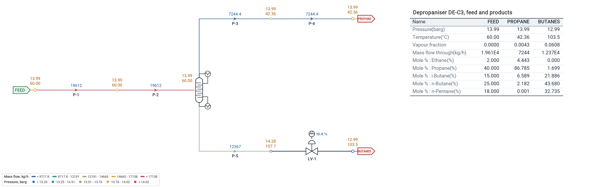

Hydraulics, thermodynamics and the mass and energy balance in one solve. Model wells, flowlines, separators, columns, compressors, control valves and exchangers, from the wellhead to the export line, with the phases of the fluid at every node.
Every pipe, valve and machine is solved with the fluid's own thermodynamics: the pressure drop, the phases, the temperature and the composition move together, across the whole network.
Real fluids
Peng-Robinson, SRK and CPA; GERG-2008 for natural gas and hydrogen; IAPWS-IF97 for water and steam; Span-Wagner for CO2. Several fluids in one project.
Two-phase flow
Beggs & Brill with the Payne correction, or homogeneous: holdup, flow pattern and slip along every pipe and its profile; isothermal or adiabatic gas lines with Mach and ρv².
Separators
Two- and three-phase flash vessels with their level valves and carryover, and component splitters for a membrane or an absorber.
Distillation columns
Columns solved stage by stage, with a condenser and a reboiler: reflux and boil-up ratios or product targets, the duties and the stage profile.
Compressors
Polytropic or isentropic, on their curves or set by ratio, pressure or power; expanders; scrubbers, recycle valves and aftercoolers in the same model.
Control valves
IEC 60534 sizing with Cv and xT, choked flow, Joule-Thomson cooling, pressure regulators and relief valves.
Heat transfer
Heaters and coolers by duty or outlet temperature, two-sided exchangers by UA or approach, pipe heat loss to the air or the soil.
Heat & material balance
One column per stream: phases, pressure, temperature, mass, molar and standard flows, properties and composition, exported to Excel; or as a table on the sheet.
Property probes
Hydrate temperature and margin, water and hydrocarbon dew points, bubble point, RVP, water cut, GOR, heating value and Wobbe index at any node.
A column, solved
The results on the sheet, where you need them.
A depropaniser of 20 stages, fed with an NGL at 60 °C: reflux ratio 2, boil-up ratio 2.5, its bottom held by a level valve. One run gives the condenser and reboiler duties, the stage profile, and the products: 86.8 % propane over the top, 1.7 % left in the bottom. A table on the sheet sets the feed and the products side by side and follows every run.

Typical use cases
Where engineers use it.
Production networks
Wells to the CPF, gas lift, subsea flowlines and risers, slugging-prone hilly lines.
Gas processing and LNG
Inlet separation, dew point control, acid gas and glycol units, NGL recovery, liquefaction and fractionation.
Pipelines
Gas export, hydrogen blends, CO2 transport and injection wells.
Flare and relief
Flare headers with choked flow, Mach number and back pressure on every relief valve, each relief case a scenario.
Utilities
Steam and condensate, nitrogen, instrument and plant air, fuel gas to turbines and heaters.
Compression
Compressor stations on their curves, in parallel and in stages, with recycle and aftercoolers; boil-off gas.
Gas & Multiphase solves in steady state. Surge and water hammer are for liquid networks, in the Transient mode.
Tutorial 3 · 2:07
Watch it in the program.
Six wells to a central processing facility: the fluids, the run, the HP separator, the heat and material balance, one choke throttled and the Scenario Manager.
Model your plant from the wells to the export line.
Request a free trial of Flowmax with the gas and multiphase examples.